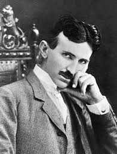

The Genius Who Lit the World

Nikola Tesla was not just an inventor—he was a visionary whose ideas shaped the very foundation of modern technology. Born in 1856 in Smiljan (present-day Croatia), Tesla demonstrated extraordinary intellectual ability from an early age. He possessed a remarkable photographic memory and an exceptional imagination, allowing him to visualize complex machines entirely in his mind before building them.
He later moved to the United States, where he briefly worked with Thomas Edison. However, their differing approaches to electrical systems led to a famous rivalry known as the War of Currents. While Edison supported direct current (DC), Tesla believed in the superiority of alternating current (AC). With the support of George Westinghouse, Tesla proved that AC was far more efficient and practical for transmitting electricity over long distances—an achievement that ultimately transformed the global power system.
Tesla’s contributions extended far beyond electrical distribution. He developed the AC induction motor, conducted groundbreaking high-voltage experiments with the Tesla Coil, and explored wireless communication and energy transmission long before such concepts became reality. His work laid the foundation for technologies such as radio, wireless power systems, and even early ideas of automation and robotics. Although Guglielmo Marconi is often credited with inventing radio, Tesla’s earlier research and patents played a crucial role in its development.
Despite his brilliance, Tesla struggled financially throughout much of his life. Driven by innovation rather than profit, he often pursued ambitious ideas that were ahead of their time and difficult to fund. As a result, he did not always receive the recognition he deserved during his lifetime.
Nevertheless, Tesla’s genius did not go entirely unnoticed. He received numerous honors, including the Edison Medal in 1917—one of the highest distinctions in electrical engineering. He was also nominated for the Nobel Prize and was a respected member of several scientific institutions.
Today, Nikola Tesla is regarded as one of the greatest inventors in history—a symbol of creativity, innovation, and relentless curiosity. His work continues to power our world, influence modern technology, and inspire generations of scientists and engineers. More than a century later, Tesla’s vision of the future remains deeply embedded in the world we live in today.